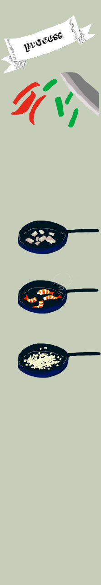
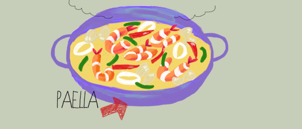

スペインの代表的な料理の１つパエリアは野菜、
魚介類、肉などをたっぷり炊き込んだ料理です。
見た目も色鮮やかで、
とてもおいしい料理です。
- お米 ２合
- 塩こしょう 少々
- 鶏もも肉 300g
- エビ 8尾
- イカ 1杯
- アサリ 200g
- 玉ねぎ 1個
- アスパラ 2本
- 赤パプリカ 1個
- 白ワイン 50cc
- 塩こしょう 少々
- オリーブオイル 大さじ2
- にんにく 3cm
- バター 少々
- ※チキンコンソメ 1個
- ※水 350cc
- ※ターメリック 少々
- ※塩 小さじ1
- パセリ 飾り用
- レモン 飾り用

- ※を合わせる
- 赤パプリカ、アスパラを食べやすい大きさにカットする
- 玉ねぎをみじん切りにする
- エビは殻をむかずしっぽと足をハサミで切る
- 鶏肉も食べやすい大きさに切る。同様にイカも
- フライパンにバターをひいて鶏肉に塩こしょうをしてこんがり焼いていく（肉汁も入れるのでとっておく）
- 同じフライパンで再度バターをひいてエビを色が変わるまで焼いていく
- ↑朝までの下ごしらえ
- フライパンにオリーブオイルをひいてにんにく。玉ねぎのみじん切りを中火で透き通るまで炒める（油はねに注意）
- 中火のままお米を加えて炒め少ししたら白ワインをいれてさらに炒める
- 弱日にして用意しておいた※と鶏肉からでた肉汁も入れて弱火でじっくり炒める（少しだけ放置しておいても大丈夫）
- 煮詰まってきて鍋の底がみえるくらいになったら火を止める
- アサリ、エビ、イカ、鶏肉、赤パプリカ、アスパラを見た目よく並べる
- 追加で無図50ccをまわし入れて再び火をつけ弱火で15分（ラスト強火で10秒）火を止めて15分そのまま蒸らす
- ふたを開けてパセルをのせたら完成！
